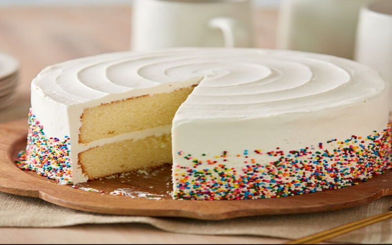

-Discovering new ways and techniques for catering services.
-Providing appropriate information about our local dishes.
-Promoting both local and international recipe.
-Establishing high quality jobs for target food service employees,including good wages and benefits,career advancement opportunities,access to training and capacity building,participation in decision-making and opportunities for ownership.
| Vision |
Goals |
Achievement |
| Providing excellent customer services. |
Creating an attractive and diverse menu. |
We have launched several branches worldwide. |
| To be the prefered center of character in catering excellency. |
Offering wholesome,fairly priced,ethnically diverse food options. |
Awarded best in Catering Services in Sub-Saharan African Countries. |
| To ensure customers meet their needs on time. |
Developing a catering service that supports skill development of the catering staff and meets the needs of the society. |
Discovery of many types of foods. |